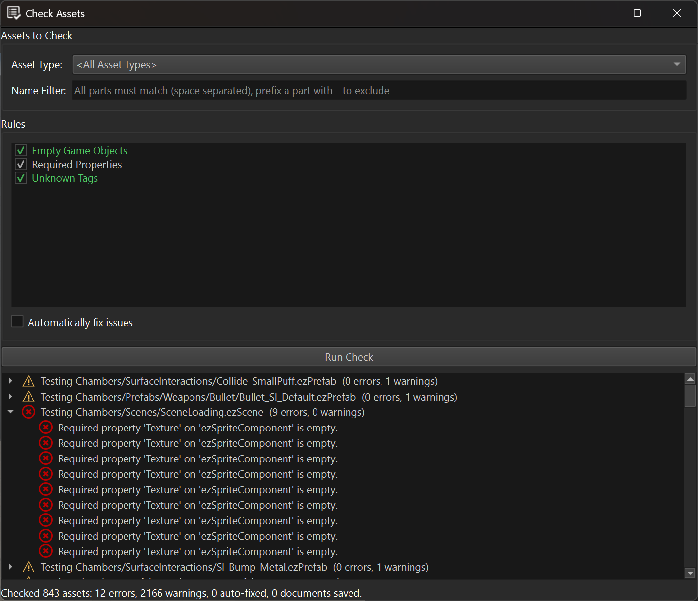

Asset Check Panel
The Check Assets panel runs validation rules across the assets of a project to find errors in the data. If the panel is not visible, use Panels > Check Assets to open it.
Unlike the asset curator, which reports assets that fail to transform, the check panel looks for problems in data that transforms successfully but is still incorrect or incomplete, for example a missing required reference or a leftover empty game object.

Usage
Asset Type: Restricts the check to assets of a single document type (e.g. Scene). Leave empty to check all asset types.
Name Filter: A search pattern matched against the data-directory-relative asset path. Only matching assets are checked.
Rules: The list of available check rules. Enable the ones to run. Each rule shows a short description of what it checks.
Automatically fix issues: If enabled, rules that support auto-fixing will modify the document to resolve the issues they find. Documents that are fixed and were not already open with unsaved changes are automatically saved afterwards. If a document already had unsaved changes, the fix is still applied, but the document is not saved automatically, to avoid saving unrelated in-progress edits.
Click Run Check to check all assets matching the current filters. Results are listed in the tree at the bottom, grouped by asset. Double-click an entry to open the corresponding asset document.
Built-in Rules
Unknown Tags: Reports used tags that are not registered in the project's tag configuration. This rule can auto-fix by removing the unknown tags.
Required Properties: Reports properties marked with ezRequiredAttribute that are left empty, or, for game object / component reference properties, that reference an object which no longer exists. This rule cannot auto-fix, since there is no sensible default value to fill in.
Empty Game Objects: Reports game objects that have no name, no components and no child objects, i.e. that have no effect on the scene. This rule can auto-fix by removing the empty objects.
Extending
Custom editor plugins can add their own check rules by deriving from ezAssetCheckRule (Code/Editor/EditorFramework/Assets/AssetCheckRule.h). Rules are discovered automatically. A rule can either override CheckObject / CheckProperty to hook into the default per-object / per-property traversal, or override CheckDocument entirely to implement custom traversal logic.